Getting Started¶
Note
Good tools are prerequisite to the successful execution of a job. – old Chinese proverb
A good programming platform can save you lots of troubles and time. Herein I will only present how to install my favorite programming platform and only show the easiest way which I know to set it up on Linux system. If you want to install on the other operator system, you can Google it. In this section, you may learn how to set up Pyspark on the corresponding programming platform and package.
Run on Databricks Community Cloud¶
If you don’t have any experience with Linux or Unix operator system, I would love to recommend you to use Spark on Databricks Community Cloud. Since you do not need to setup the Spark and it’s totally free for Community Edition. Please follow the steps listed below.
- Sign up a account at: https://community.cloud.databricks.com/login.html
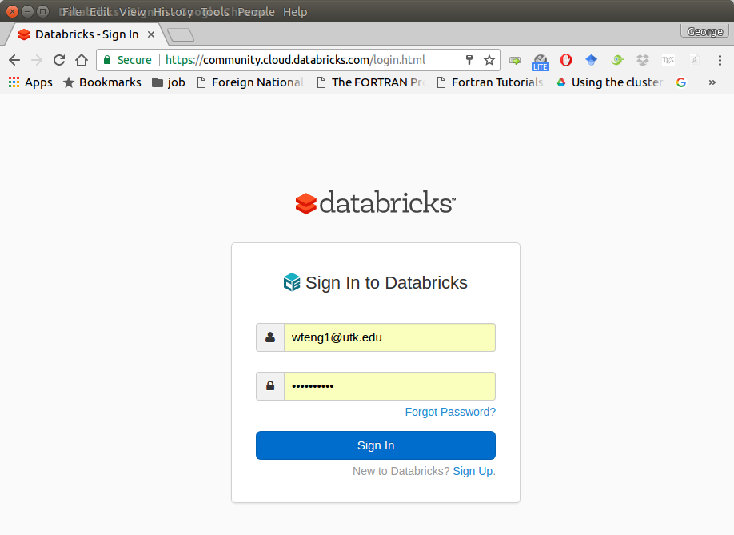
- Sign in with your account, then you can creat your cluster(machine), table(dataset) and notebook(code).
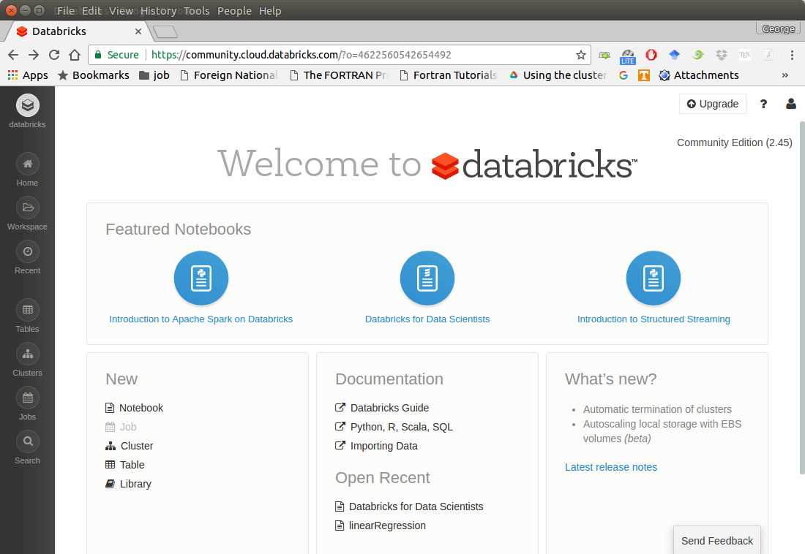
- Create your cluster where your code will run
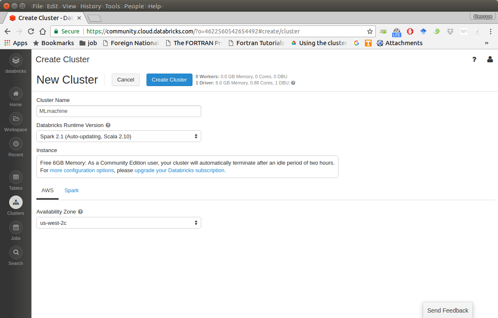
- Import your dataset
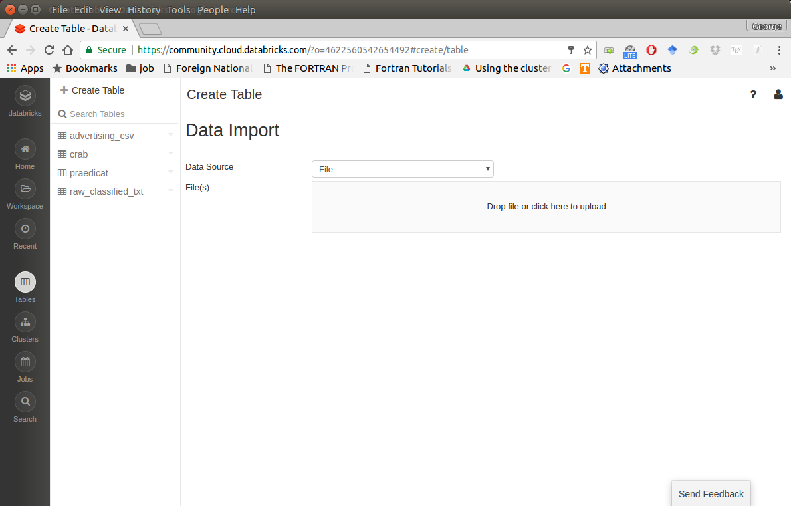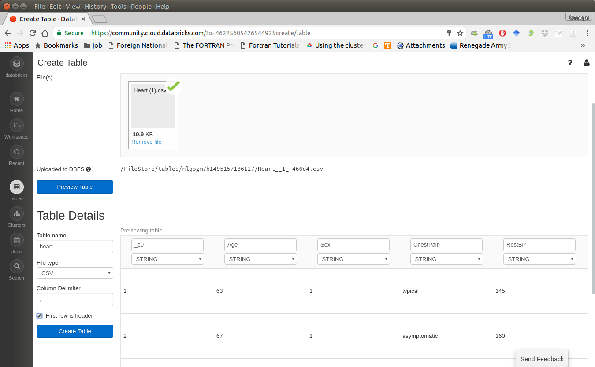Note
You need to save the path which appears at Uploaded to DBFS: /FileStore/tables/05rmhuqv1489687378010/. Since we will use this path to load the dataset.
- Creat your notebook
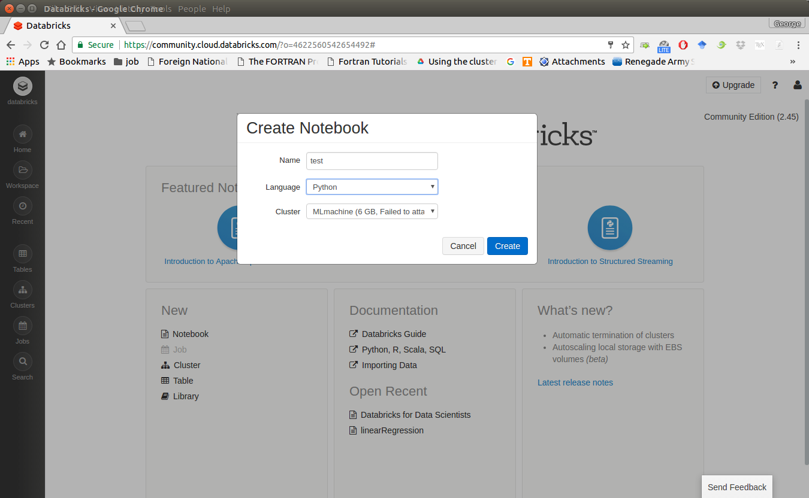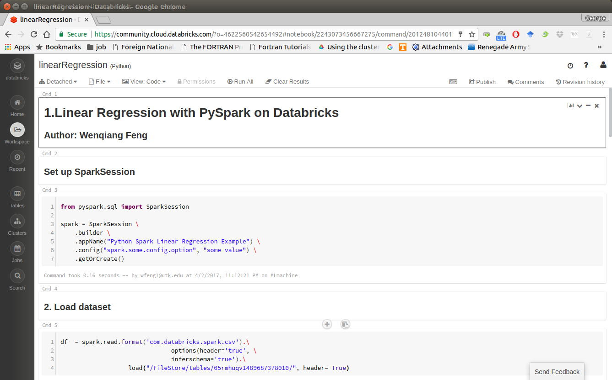
After finishing the above 5 steps, you are ready to run your Spark code on Databricks Community Cloud. I will run all the following demos on Databricks Community Cloud. Hopefully, when you run the demo code, you will get the following results:
+---+-----+-----+---------+-----+ |_c0| TV|Radio|Newspaper|Sales| +---+-----+-----+---------+-----+ | 1|230.1| 37.8| 69.2| 22.1| | 2| 44.5| 39.3| 45.1| 10.4| | 3| 17.2| 45.9| 69.3| 9.3| | 4|151.5| 41.3| 58.5| 18.5| | 5|180.8| 10.8| 58.4| 12.9| +---+-----+-----+---------+-----+ only showing top 5 rows root |-- _c0: integer (nullable = true) |-- TV: double (nullable = true) |-- Radio: double (nullable = true) |-- Newspaper: double (nullable = true) |-- Sales: double (nullable = true)
Set up Spark on Mac and Ubuntu¶
- Installing Python
Go to Ubuntu Software Center and follow the following steps:
- Open Ubuntu Software Center
- Search for python
- And click Install
Or Open your terminal and using the following command:
sudo apt-get install build-essential checkinstall sudo apt-get install libreadline-gplv2-dev libncursesw5-dev libssl-dev libsqlite3-dev tk-dev libgdbm-dev libc6-dev libbz2-dev sudo apt-get install python sudo easy_install pip sudo pip install ipython
PySpark With Text Editor or IDE¶
PySpark With Sublime Text¶
After you finishing the above setup steps in Set up Spark on Mac and Ubuntu, then you should be good to use Sublime Text to write your PySpark Code and run your code as a normal python code in Terminal.
python test_pyspark.py
Then you should get the putput results in your terminal.
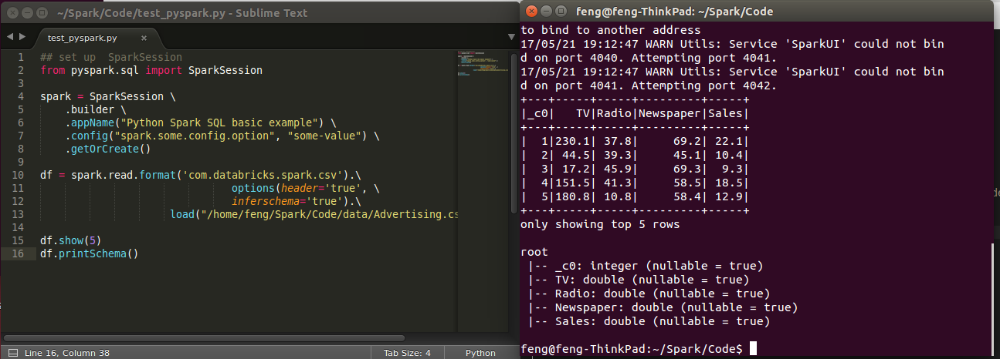
PySpark With Eclipse¶
If you want to run PySpark code on Eclipse, you need to add the paths for the External Libraries for your Current Project as follows:
- Open the properties of your project
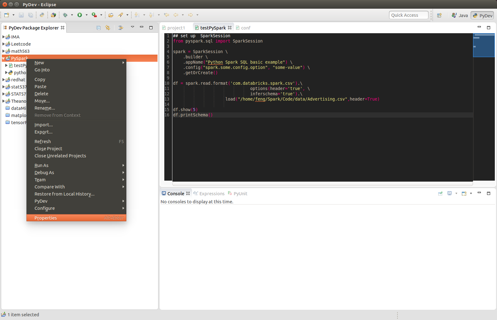
- Add the paths for the External Libraries
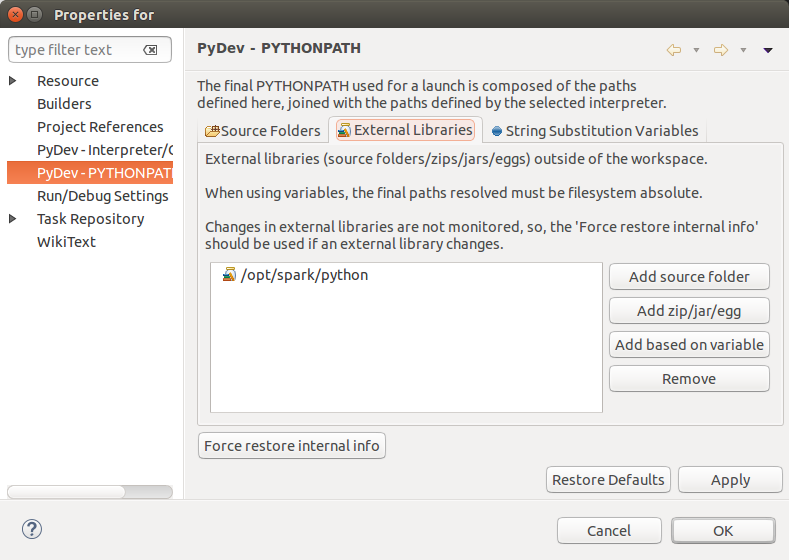
And then you should be good to run your code on Eclipse with PyDev.
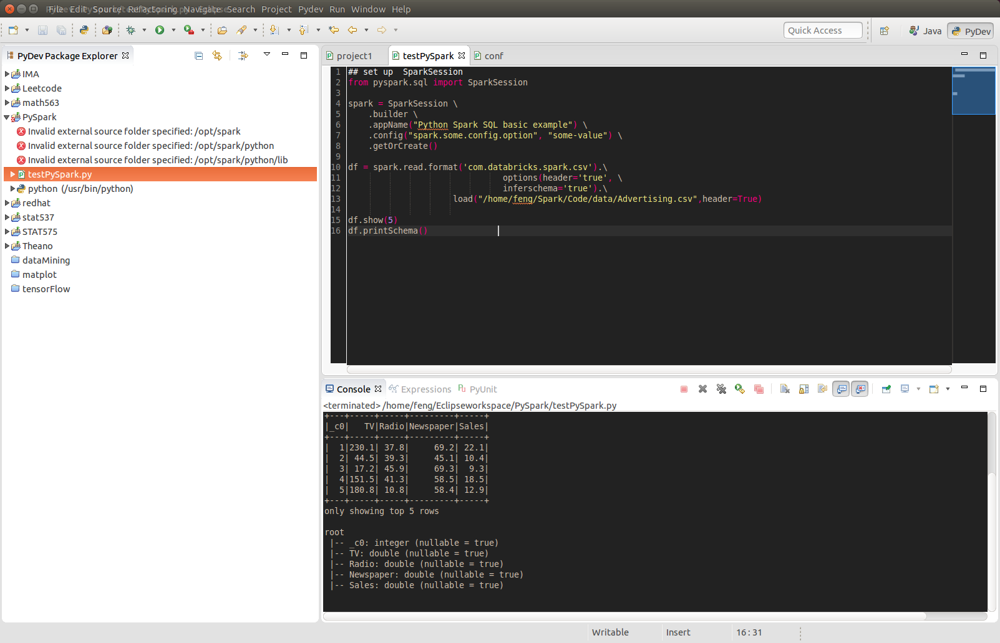
PySpark With Jupyter Notebook¶
After you finishing the above setup steps in Set up Spark on Mac and Ubuntu, then you should be good to use write and run your PySpark Code in Jupyter notebook.
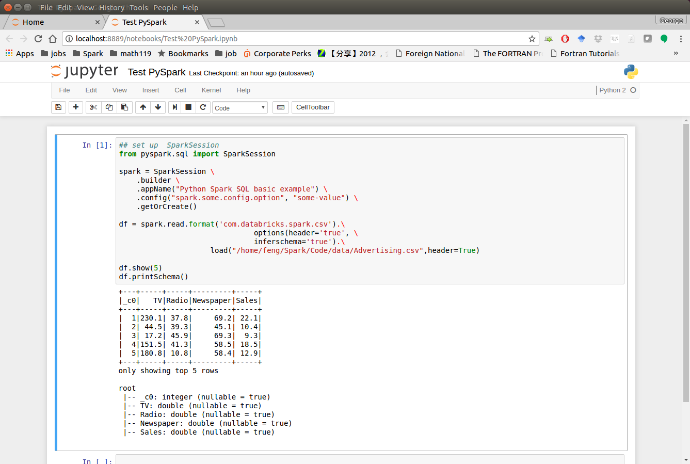
Set up Spark on Cloud¶
Folloing the setup steps in Set up Spark on Mac and Ubuntu, you can set up your own cluster on the cloud, for example AWS, Google Cloud. Actually, for those clouds, they have their own Big Data tool. Yon can run them directly whitout any setting just like Databricks Community Cloud. If you want more details, please feel free to contact with me.
Demo Code in this Section¶
The code for this section is available for download test_pyspark,
- Python Source code
## set up SparkSession from pyspark.sql import SparkSession spark = SparkSession \ .builder \ .appName("Python Spark SQL basic example") \ .config("spark.some.config.option", "some-value") \ .getOrCreate() df = spark.read.format('com.databricks.spark.csv').\ options(header='true', \ inferschema='true').\ load("/home/feng/Spark/Code/data/Advertising.csv",header=True) df.show(5) df.printSchema()